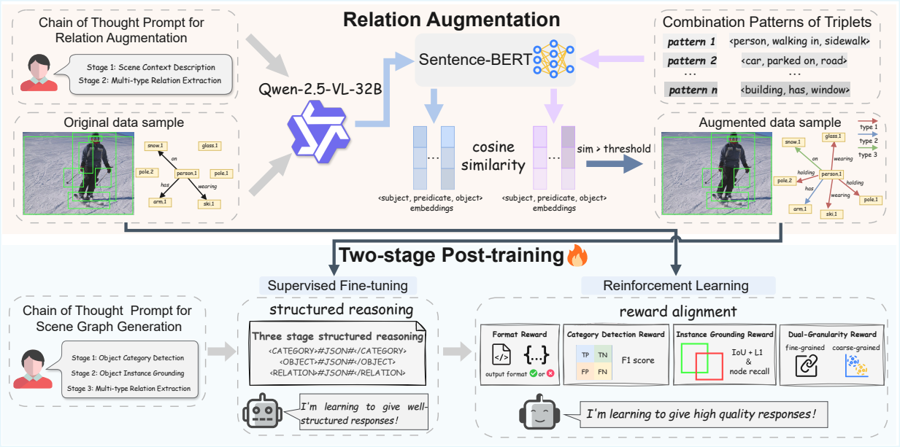

Master's Student · Peking University
JY Feng
I work on large language models, with a focus on post-training, reinforcement learning, self-evolution, and multimodal scene understanding.
I am a master's student at Peking University. I received my undergraduate degree from Beijing University of Posts and Telecommunications.
My current research explores how base models can elicit native reasoning abilities through small-data self-distillation, and how multimodal large models can perform structured visual reasoning for scene graph generation.
News
- Our paper has been accepted to ACM Multimedia 2026.
- Our latest work, Eliciting Native Reasoning in Base Models via Small-Data Self-Distillation, is currently under submission.
- SGG-R³ has been accepted to Findings of ACL 2026.
Research Interests
- LLM post-training and reinforcement learning
- Small-data self-distillation and native reasoning in base models
- Self-evolution mechanisms for large language models
- Multimodal large models and scene graph generation
- Rejection sampling fine-tuning and reasoning data synthesis
Selected Publications
MoreEliciting Native Reasoning in Base Models via Small-Data Self-Distillation
Under submission
Investigates whether base models can develop native reasoning behavior from small-scale self-distillation, without relying solely on large supervised instruction corpora.
Education
Peking University
Master's Student · Beijing, China
Beijing University of Posts and Telecommunications
Undergraduate Student · Beijing, China
Projects
Foundations of RL Learning
A hands-on educational library with from-scratch Python implementations of foundational reinforcement learning algorithms.